2025年7月
广播发布后不可编辑，所以每条都是那一刻的原话。
2025-07-31 15:44:49
看过 她的生存之道 ★★★☆☆
童童你还是好好唱歌吧。整体影调灰蒙蒙的，看得十分累人。本以为田导是本色出演，结果是个坏蛋。另外总是莫名其妙地使用镜子的反射，可效果只能是差强人意。陪老妈一块看的。
2025-07-30 17:24:50
看过 北京遇上西雅图之不二情书 ★★★☆☆
还是为了汤唯的脸蛋儿才看的。惊艳“向死而生”以后小虾去赌场的平行蒙太奇。靠书信来维系若有若无的soulmate有些难以置信，但电影与现实中的《查令十字街84号》结合起来还蛮有趣的。用来打发台风天的一个下午。
2025-07-29 18:30:40
 在听 雄狮少年 电影原声音乐专辑 ★★★★☆
在听 雄狮少年 电影原声音乐专辑 ★★★★☆
喜欢《纸飞机》。
2025-07-29 18:29:25
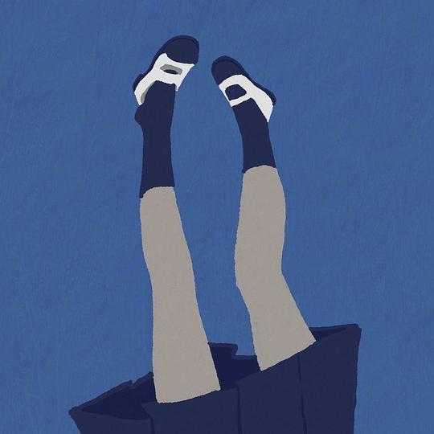
很好看的封面与很神奇的填词。
2025-07-28 15:56:38
看过 未来赞美诗 ★★★☆☆
计算摄影依旧有焦点跳跃的毛病，所以鲜有特写镜头。韩延很会抓取当下甚至以后的情绪痛点，叶奶奶演得真好哇，小任怎么老是一副精英样。
2025-07-27 23:12:57
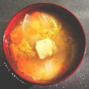
好洗耳。最后突然的结束很走心。
2025-07-27 16:16:00
看过 雄狮少年2 ★★★★☆
比上一部节奏好多了，人物设计也养眼了许多。舞狮居然能很好地和武术结合起来。最喜欢最后决斗时的奇幻蒙太奇，野草里也许真的藏了那么一头雄狮。那个纸艺卡片也很出彩。片尾的狮头与擂台的创意插画也很吸引我。阿娟从刚开始的瘦骨如柴到现在一身肌肉看得我好羡慕哦。我也要开始锻炼了。
2025-07-26 20:38:00
看过 姜文和他的电影们 ★★★★★
老姜通过对过去作品的梳理，才发现真的有一些过度解读的。最喜欢老姜与马小军的那一集。好多没见过的花絮，看得很开心。
2025-07-26 20:37:05
在看 姜文和他的电影们 ★★★★★
老姜通过对过去作品的梳理，才发现真的有一些过度解读的。最喜欢老姜与马小军的那一集。好多没见过的花絮，看得很开心。
2025-07-26 17:36:40
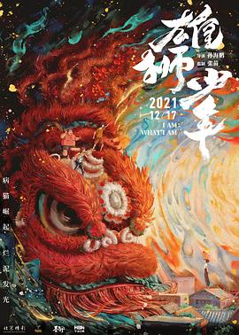
风景很秀丽，但人物造型实在拖后腿。经过社会的洗礼后肌肉真正地壮实了起来。阿娟是不是有恋母情结，阿娟好像他的母亲哦。木棉花的意象居然在这里就被这么使用了么，比《长安的荔枝》超前。被舆论引导了这么久，这次才得幸大饱眼福。
2025-07-25 16:42:20
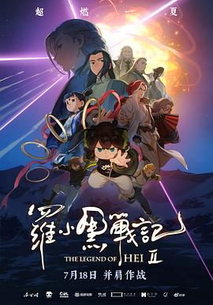
MTJJ终于学会了镜头语言，开头推拉摇移十分老练。画面依旧精彩，打斗非常有力，就是人物表情总是冷冰冰的，好像一点也不费力似的。这部的3D制作效果很好，不像上部那样廉价了。最后的人类与妖精也可作民族比，不好一概而论的。片尾看到了iso与mint，还有好多眼熟的工作室。真好。
2025-07-24 16:32:22
看过 头脑特工队2 / Inside Out 2 ★★★☆☆
这么看情绪的拟人化反倒使得人类变得机器化了，情绪一旦定量也就消失了意义。另外国内的特别汉化版里面居然连报纸上写了中文，要知道文字也是电影语境构建的一部分，这样子搞真是太出戏了。捏他了米奇与土豆。头脑风暴的具体化真是新颖。双线叙事是教科书级别的处理。
2025-07-21 17:18:12
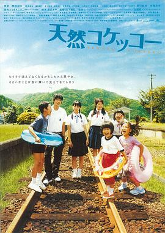
夏天看。（摄影很美丽，小草绿油油的。山下总是擅长拍出JK健康的肌肤与大腿的线条。最后大泽说那个吻里没有爱，我发觉我也是这么想的。于是右田悄悄亲了黑板上原本大泽画像存在的地方，让我好动情。长镜头色调的变换很细腻。青春时候的夏帆好可爱哦。）
2025-07-20 23:19:45
在看 更衣人偶坠入爱河 第二季 / その着せ替え人形は恋をする Season 2 ★★★★☆
剧情比较硬核，只是作画非一般地顶，令我瞠目结舌。首集的摄影很强势，在新菜自我怀疑的那幕戏里，双马尾小妹的歌声由浅至深地渗入，很有点意思。
2025-07-18 22:13:00
 想读 红唇
想读 红唇
从《王家卫的电影世界》里想读。
2025-07-18 22:10:01
 想读 陪我散步吧
想读 陪我散步吧
“我们不要在这里，跟我回去18岁，躲到台大校园杜鹃花丛下，不要被命运找到。”
2025-07-18 22:09:08
想读 陪我散步吧
2025-07-18 21:59:30
看过 长安的荔枝 ★★★★☆
看到三个主演的名字差点以为这是《年会不能停》下一部了。实际上剧情比原著简化了好多，把一些推进剧情的句子不约而同地都给了别的角色来说。我最对原著中老李与苏谅的忘年交意难平，这里给了苏谅回头的戏份我真的很开心。老李奔马飞进长安城的时候木棉花从行囊中漏出的造型好美之翩翩哦。
2025-07-18 17:10:08
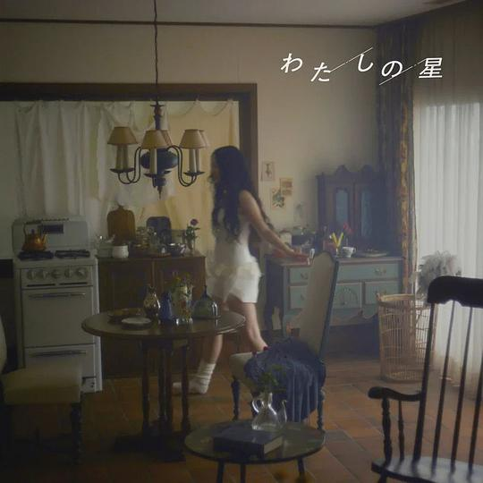
突然发现这首歌居然没有条目，随手便添加了。编曲富有层次，但旋律不好听，没有岩崎太整你给《血界战线》做的ost的爵士乐悦耳。
2025-07-18 15:37:55
看过 平原上的摩西 ★★★★☆
电影化的叙事来演电视剧，真少见。同一景别很少切镜头，小说里更多的是“我”的主观讲述并夹杂这一些他者口吻，而这里完完全全是克制的客观视角。开头湖上的镜头调度很见功力，海清姐文绉绉的嗓音立马与老庄的东北满腔形成了强烈的对比。少了火柴一幕的特写。吃烧麦时候门口有个醉鬼拎着酒瓶打盹，最后寻问头在哪儿的场景真是触人心弦。董子健有些面瘫，第四集cue了一下他的电影《我的朋友安德烈》。剧情有很多原创的地方，但并没有做到补充主线的效果。结尾与小说出入蛮大的。湖面上的长镜头很好。小树的奔跑又说明了小树的骗人。整体影调蛮悲凉的。
2025-07-18 12:25:30
看过 花漾少女杀人事件 ★★★★☆
开头的冰刀割喉使我想起了《白日焰火》里的杀人。不同于《黑天鹅》最后结尾是女主的蜕变而忽略了人际关系的变化，这里的最后女主对母亲、母亲对女主、女主对自己在一定程度上都进行了和解。其实我以为的钟灵是虚实参半的，只是没想到最后真相的揭示是那么地简单。
2025-07-17 23:23:50
想看 蜡笔小新：大人王国的反击 クレヨンしんちゃん 嵐を呼ぶ モーレツ!オトナ帝国の逆襲 (2001)
2025-07-17 20:50:12
看过 你行！你上！ ★★★★☆
仍是老姜的手笔，我倒是希望他不要老拘泥于拍什么指涉政治的电影了，拍点别的我也爱看。开头标题的出来真是出人意料，碧水蓝天的楼顶像是梦境一般。雪里面的主席还在指着方向。三轮摩托的四季变换真美丽，辛芷蕾仍是一如既往地漂亮。怎么葛大爷一说话我就出戏到师爷哪儿去了呢，也想不明白为什么老姜常常用定帧来结束一场戏。“半生缘”的解释让我鼻头抽动。但结尾一高潮便泄气了，我果然还是喜欢老姜拍他老婆。
2025-07-16 17:31:07
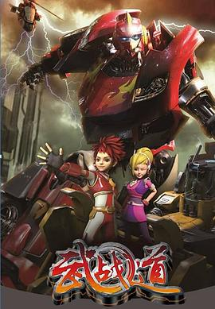
画风更精致了，但没原版有趣了。
2025-07-16 17:30:51
在看 武战道 ★★★★☆
画风更精致了，但没原版有趣了。
2025-07-16 17:28:25
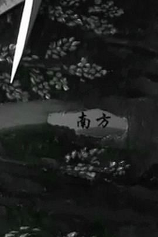
故弄玄虚的黑白。
2025-07-16 17:27:29
看过 北京遇上西雅图 ★★★☆☆
这部单纯是为了汤唯的颜来看的。本以为吴秀波是霸总类型的角色，结果是个DB真没想到。公主病真可怕。
2025-07-16 14:22:40
 读过 长安的荔枝 ★★★★☆
读过 长安的荔枝 ★★★★☆
马亲王的用词好古典哦。读完还蛮有趣的。喜欢李夫人的一句“我嫁的是他，又不是长安。”
2025-07-15 22:06:44
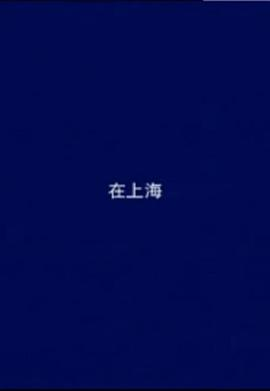
最后追逐的戏使镜头摇晃起来杂糅了此上海与彼上海的夜晚，使其稍稍和谐了那么一点。女孩羞赧地望向摄像机就像我羞涩地站在桥上看着上海。
2025-07-14 19:48:50
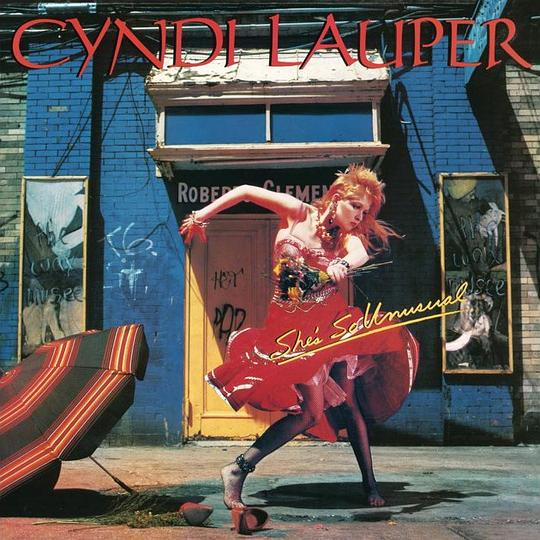
好艺术好古灵精怪的封面。
2025-07-14 18:10:36
 在听 Hello ★★★★☆
在听 Hello ★★★★☆
好听。编曲很悦耳。
2025-07-14 17:07:47
 在看 吊带袜天使 / パンティ&ストッキングwithガーターベルト ★★★★★
在看 吊带袜天使 / パンティ&ストッキングwithガーターベルト ★★★★★
好别致的美术风格。在这里我要重申一下，扳机社是我的神！
2025-07-14 16:32:15
在读 长安的荔枝 ★★★★☆
马亲王的用词好古典哦。
2025-07-13 17:12:09
在看 平原上的摩西 ★★★★☆
电影化的叙事来演电视剧，真少见。同一景别很少切镜头，小说里更多的是“我”的主观讲述并夹杂这一些他者口吻，而这里完完全全是克制的客观视角。开头湖上的镜头调度很见功力，海清姐文绉绉的嗓音立马与老庄的东北满腔形成了强烈的对比。少了火柴一幕的特写。
2025-07-13 17:07:08
在看 平原上的摩西 ★★★★☆
电影化的叙事来演电视剧，真少见。同一景别很少切镜头，小说里更多的是“我”的主观讲述并夹杂这一些他者口吻，而这里完完全全是克制的客观视角。开头湖上的镜头调度很见功力，海清姐文绉绉的嗓音立马与老庄的东北满腔形成了强烈的对比。少了火柴一幕的特写。
2025-07-13 15:29:11
看过 幸运星 OVA / らき☆すた OVA ★★★★★
以小狗的视角开篇，很有趣。魔女此方与初音小镜可爱捏。新房风来得猝不及防。白石最后又被整活了。orz。
2025-07-13 08:57:04
想看 花漾少女杀人事件
2025-07-13 08:50:01
想看 长安的荔枝
2025-07-12 19:15:56
在听 彼方高さから躰放ったあなた ★★★★★
很好看的封面与很神奇的填词。
2025-07-12 19:15:16
听过 倩倩的十个白日梦 ★★★★☆
从bobo和toto那里了解到了《芭比》，还挺抓耳的。
2025-07-12 15:27:05
看过 超人 / Superman ★★★★☆
刚开始我就在疑惑为什么既然外星科技了超人的大门还是有缝的呢。猴子水军真不是在骂人么。战斗的长镜头还是一如既往地精彩。进克拉克房间的时候我才意识这版超人着重刻画的是他普通人的一面，父母的宽慰也是如此，所以这里的超人好像一个大孩子哦。绿灯中指笑死我了。当背景是夜空里的五维生物与正义帮的战斗，这时候的超人很迷人。
2025-07-11 00:26:51
听过 搀扶 ★★☆☆☆
听的是马健涛的专辑。父母比较喜欢词的立意。只是不明白为什么为了下沉市场居然专辑要出现整整十二首不同编曲的歌。
2025-07-09 12:49:33
2025-07-07 22:33:06
看过 幸福伽菜子的快乐杀手生活 / 幸せカナコの殺し屋生活 ★★★★☆
蛮精致的一部篇幅较短的剧。有笑点，但制作不算上乘。第三集末的大头特效绷不住了。目前来看都是对实际恶的坏人出手啊。最后一集好狗血哦，银发男的死亡呼应了超级战队的剧情。雾蓝色的呐喊真解气，前辈最后时刻的摇铃让我惊叹。
2025-07-07 17:15:36
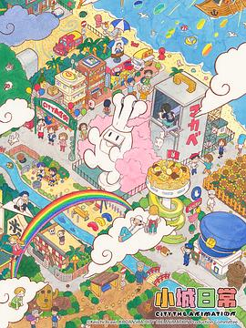
又是熟悉的京阿尼的日常演出。这次还会是叫好不叫座么。第一集笑点不多，单单为了介绍CITY。
2025-07-06 22:58:39
听过 春日影 - From THE FIRST TAKE ★★★★☆
喜欢这次的腔调。
2025-07-06 22:58:21
听过 好糟糕的派对 ★★★★☆
阿岳还在舒适区里。
2025-07-06 16:17:25
看过 幸运星 / らき☆すた ★★★★★
节奏脑洞都挺好。（看到“永驻心中的彼方”了。）（真为阿宽感到可惜，编舞便很勾引人。）（每次白石的ed都要笑死人。）（在“永驻心中的彼方”的后半段差点落泪。）（最后一集真是意犹未尽，把日常的演绎推向了极致。老师的虎牙真可爱。傲娇的镜也很可爱呀。）
2025-07-05 19:42:43
看过 雷霆特攻队* / Thunderbolts* ★★★☆☆
搞笑也不好笑，节奏很不规整，打戏软绵绵的。最后的结局好无厘头哦，坏人难道依旧逍遥么。彩蛋是说神奇四侠要归来了？冬兵痞帅痞帅的。
2025-07-04 16:54:43
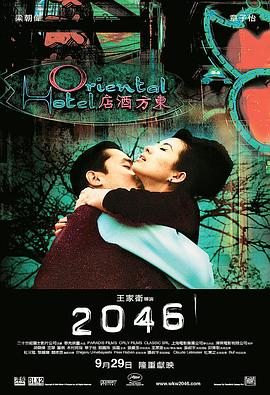
这是一部野心很大的电影，但最后的效果只能是差强人意。影片回溯了无脚鸟、菲律宾、武侠小说等过去作品的意象，不断讲着过去的叙事，充满了自己的影子。香港的历史资料在这里用来佐证周慕云爱情的实体，2046之于香港似乎出借之于周先生。尤其他对苏丽珍的两次邀约简直是王家卫在一直寻找之前的自己。半边胡子的周先生真搞笑。王菲的眼睛大大的亮亮的真漂亮。
2025-07-04 10:37:19
 在读 莎士比亚十四行诗 ★★★★☆
在读 莎士比亚十四行诗 ★★★★☆
在多抓鱼淘到的宝贝，成色很不错。之后又买了一本同版本的新书送给了杨青。莎翁的诗真迷人。
2025-07-03 16:52:19
看过 边境杀手 / Sicario ★★★☆☆
摄影画面很美，云朵蛮有人文的气息。只是剧情中规中矩毫无波澜。
2025-07-02 13:17:04
在听 春日影 - From THE FIRST TAKE ★★★★☆
喜欢这次的腔调。
2025-07-02 13:16:22
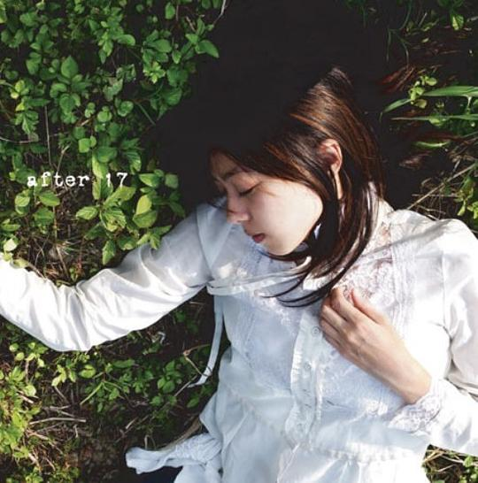
老叶推荐给我听的。
2025-07-02 13:16:00
 在读 病隙碎笔 ★★★★★
在读 病隙碎笔 ★★★★★
加多宝送我的小书，一直没机会读抑或读完。